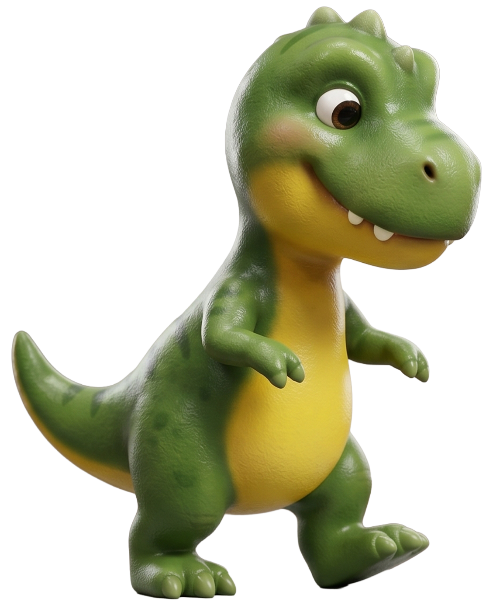

0 de 5 prontos🌟
🌞
☁️☁️
Dormindo… 😴
← Voltar pra rotina

-
1
👀
Abrir os olhosDevagar, deixando a luz entrar.✓
-
2
🙆
EspreguiçarBraços bem pro alto!✓
-
3
🛏️
Sentar na camaPés no chão, com calma.✓
-
4
☀️
Dar bom diaPra quem está em casa.✓
-
5
🚶
LevantarE começar a aventura do dia!✓